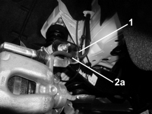

4420AF CHECK OF SPRING STATUS ON LAYOUT BRACKETS
- Path
- Test > 44 SUSPENSION AND WHEELS > 4420 REAR SUSPENSION > 4420A REAR DAMPERS AND SPRINGS > 4420AF CHECK OF SPRING STATUS ON LAYOUT BRACKETS
- Kind
- test / check procedure
- Applies to
- engines: 1.8, 1.9 JTS, 2.2 JTS, 3.2 JTS, 1.9 JTD 8V, 1.9 JTD 16V; all production periods
- Interactive page
- https://sloeber94.github.io/elrnDB/#/939010253
Applies to: engines: 1.8, 1.9 JTS, 2.2 JTS, 3.2 JTS, 1.9 JTD 8V, 1.9 JTD 16V; all production periods
- Position the vehicle on a two column lift and raise it.
1. Check that there are no layout brackets without clips that flexible brake pipes pass through.
2. If the clips are present, check that they are in good condition and that the rubber mountings (2a) are not damaged and do not have torn edges.
